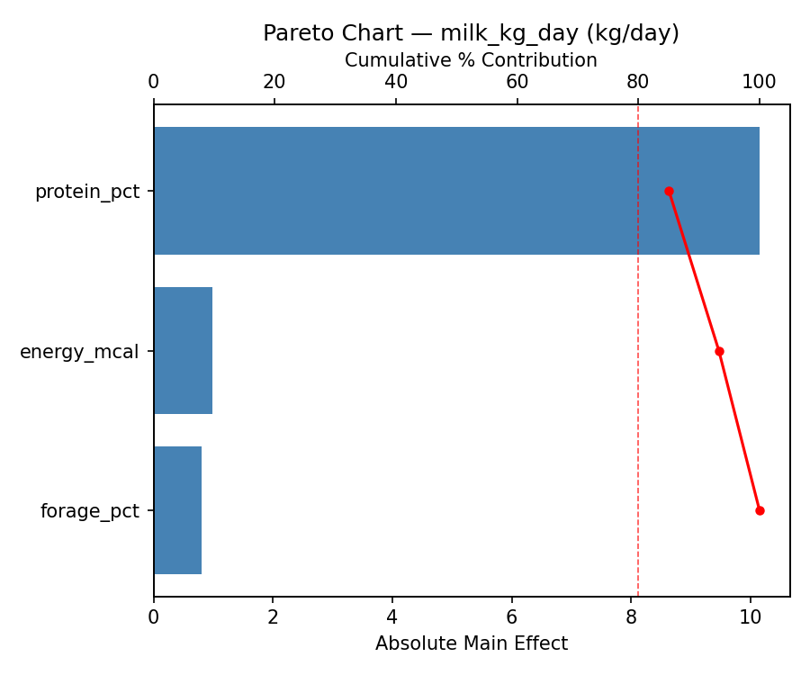
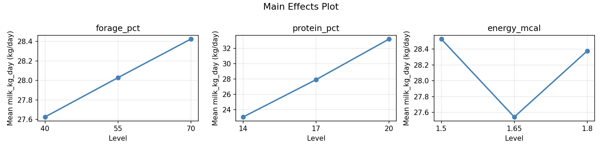
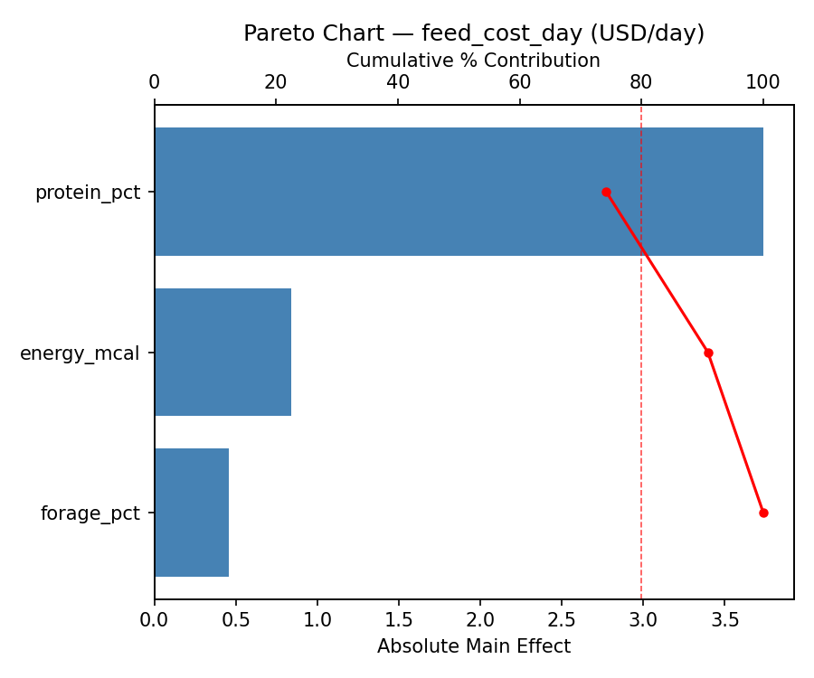
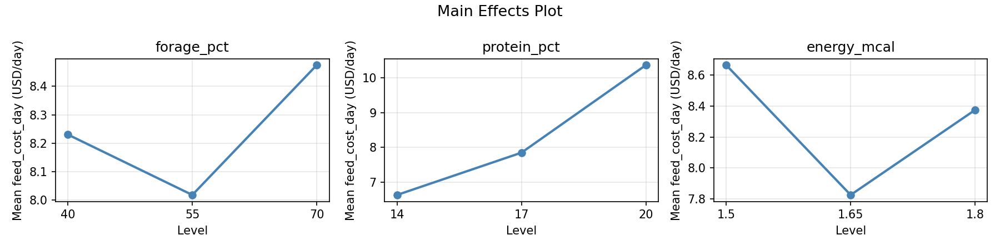
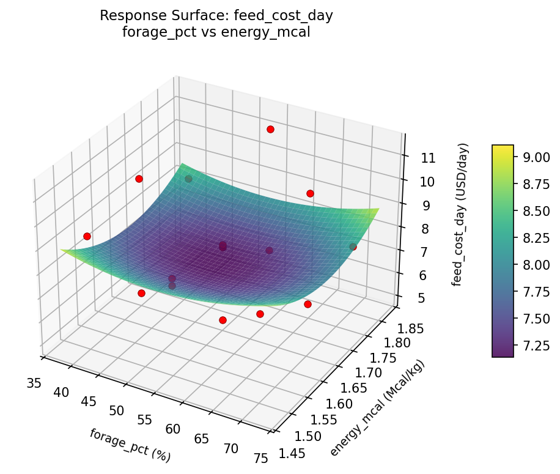
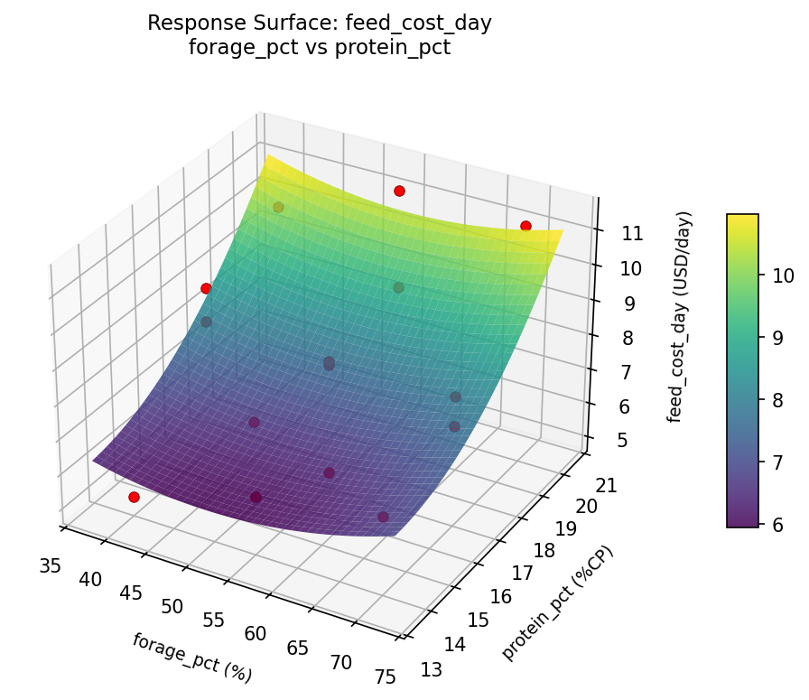
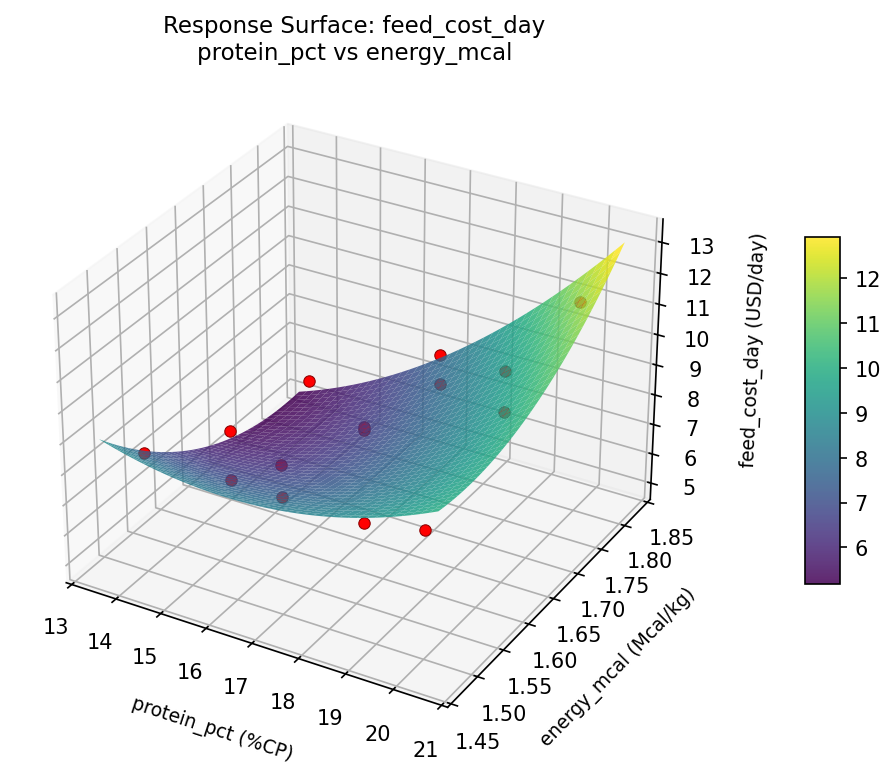
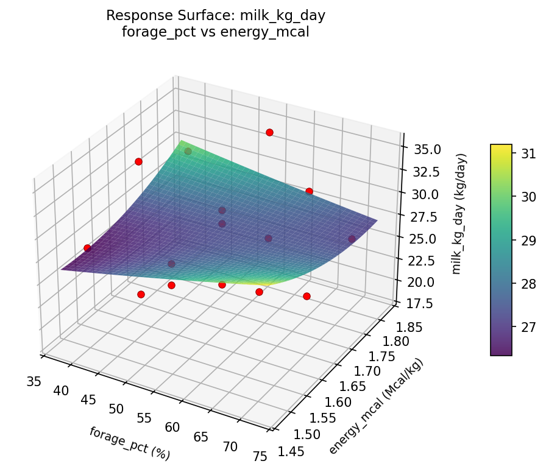
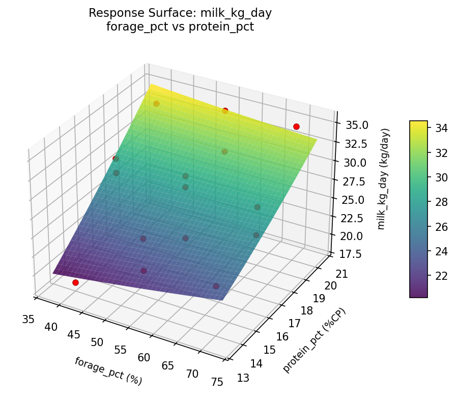
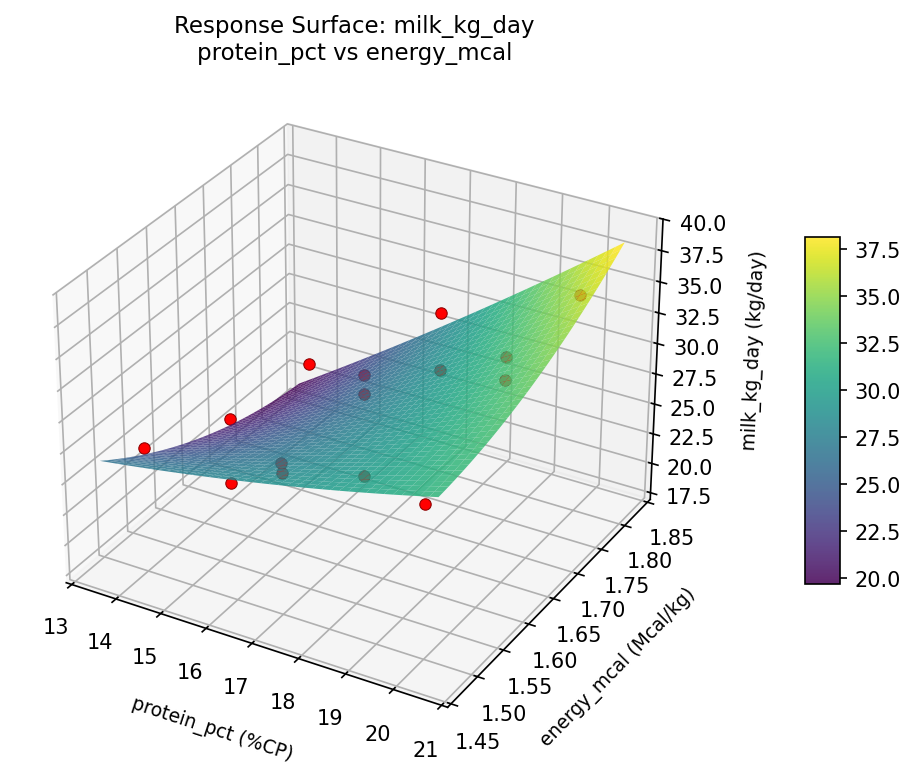

Summary
This experiment investigates dairy cow feed ration. Box-Behnken design to maximize milk yield and minimize feed cost by tuning forage-to-concentrate ratio, protein supplement, and energy density.
The design varies 3 factors: forage pct (%), ranging from 40 to 70, protein pct (%CP), ranging from 14 to 20, and energy mcal (Mcal/kg), ranging from 1.5 to 1.8. The goal is to optimize 2 responses: milk kg day (kg/day) (maximize) and feed cost day (USD/day) (minimize). Fixed conditions held constant across all runs include breed = holstein, lactation stage = mid.
A Box-Behnken design was chosen because it efficiently fits quadratic models with 3 continuous factors while avoiding extreme corner combinations — requiring only 15 runs instead of the 8 needed for a full factorial at two levels.
Quadratic response surface models were fitted to capture potential curvature and factor interactions. The RSM contour plots below visualize how pairs of factors jointly affect each response.
Key Findings
For milk kg day, the most influential factors were protein pct (85.1%), energy mcal (8.2%), forage pct (6.7%). The best observed value was 35.2 (at forage pct = 55, protein pct = 17, energy mcal = 1.65).
For feed cost day, the most influential factors were protein pct (74.2%), energy mcal (16.7%), forage pct (9.1%). The best observed value was 5.03 (at forage pct = 70, protein pct = 14, energy mcal = 1.65).
Recommended Next Steps
- Run confirmation experiments at the predicted optimal settings to validate the model.
- Consider whether any fixed factors should be varied in a future study.
Experimental Setup
Factors
| Factor | Low | High | Unit |
|---|
forage_pct | 40 | 70 | % |
protein_pct | 14 | 20 | %CP |
energy_mcal | 1.5 | 1.8 | Mcal/kg |
Fixed: breed = holstein, lactation_stage = mid
Responses
| Response | Direction | Unit |
|---|
milk_kg_day | ↑ maximize | kg/day |
feed_cost_day | ↓ minimize | USD/day |
Configuration
{
"metadata": {
"name": "Dairy Cow Feed Ration",
"description": "Box-Behnken design to maximize milk yield and minimize feed cost by tuning forage-to-concentrate ratio, protein supplement, and energy density"
},
"factors": [
{
"name": "forage_pct",
"levels": [
"40",
"70"
],
"type": "continuous",
"unit": "%"
},
{
"name": "protein_pct",
"levels": [
"14",
"20"
],
"type": "continuous",
"unit": "%CP"
},
{
"name": "energy_mcal",
"levels": [
"1.5",
"1.8"
],
"type": "continuous",
"unit": "Mcal/kg"
}
],
"fixed_factors": {
"breed": "holstein",
"lactation_stage": "mid"
},
"responses": [
{
"name": "milk_kg_day",
"optimize": "maximize",
"unit": "kg/day"
},
{
"name": "feed_cost_day",
"optimize": "minimize",
"unit": "USD/day"
}
],
"settings": {
"operation": "box_behnken",
"test_script": "use_cases/291_dairy_cow_nutrition/sim.sh"
}
}
Experimental Matrix
The Box-Behnken Design produces 15 runs. Each row is one experiment with specific factor settings.
| Run | forage_pct | protein_pct | energy_mcal |
|---|
| 1 | 55 | 14 | 1.5 |
| 2 | 55 | 17 | 1.65 |
| 3 | 70 | 17 | 1.8 |
| 4 | 70 | 17 | 1.5 |
| 5 | 55 | 17 | 1.65 |
| 6 | 55 | 17 | 1.65 |
| 7 | 40 | 17 | 1.8 |
| 8 | 70 | 14 | 1.65 |
| 9 | 55 | 14 | 1.8 |
| 10 | 70 | 20 | 1.65 |
| 11 | 40 | 17 | 1.5 |
| 12 | 55 | 20 | 1.8 |
| 13 | 40 | 14 | 1.65 |
| 14 | 40 | 20 | 1.65 |
| 15 | 55 | 20 | 1.5 |
Step-by-Step Workflow
1
Preview the design
$ python doe.py info --config use_cases/291_dairy_cow_nutrition/config.json
2
Generate the runner script
$ python doe.py generate --config use_cases/291_dairy_cow_nutrition/config.json \
--output use_cases/291_dairy_cow_nutrition/results/run.sh --seed 42
3
Execute the experiments
$ bash use_cases/291_dairy_cow_nutrition/results/run.sh
4
Analyze results
$ python doe.py analyze --config use_cases/291_dairy_cow_nutrition/config.json
5
Get optimization recommendations
$ python doe.py optimize --config use_cases/291_dairy_cow_nutrition/config.json
6
Generate the HTML report
$ python doe.py report --config use_cases/291_dairy_cow_nutrition/config.json \
--output use_cases/291_dairy_cow_nutrition/results/report.html
Features Exercised
| Feature | Value |
|---|
| Design type | box_behnken |
| Factor types | continuous (all 3) |
| Arg style | double-dash |
| Responses | 2 (milk_kg_day ↑, feed_cost_day ↓) |
| Total runs | 15 |
Analysis Results
Generated from actual experiment runs using the DOE Helper Tool.
Response: milk_kg_day
Top factors: protein_pct (85.1%), energy_mcal (8.2%), forage_pct (6.7%).
Pareto Chart

Main Effects Plot

Response: feed_cost_day
Top factors: protein_pct (74.2%), energy_mcal (16.7%), forage_pct (9.1%).
Pareto Chart

Main Effects Plot

Response Surface Plots
3D surfaces fitted with quadratic RSM. Red dots are observed data points.
feed cost day forage pct vs energy mcal

feed cost day forage pct vs protein pct

feed cost day protein pct vs energy mcal

milk kg day forage pct vs energy mcal

milk kg day forage pct vs protein pct

milk kg day protein pct vs energy mcal

Full Analysis Output
RSM surface: rsm_milk_kg_day_forage_pct_vs_protein_pct.png
RSM surface: rsm_milk_kg_day_forage_pct_vs_energy_mcal.png
RSM surface: rsm_milk_kg_day_protein_pct_vs_energy_mcal.png
RSM surface: rsm_feed_cost_day_forage_pct_vs_protein_pct.png
RSM surface: rsm_feed_cost_day_forage_pct_vs_energy_mcal.png
RSM surface: rsm_feed_cost_day_protein_pct_vs_energy_mcal.png
=== Main Effects: milk_kg_day ===
Factor Effect Std Error % Contribution
--------------------------------------------------------------
protein_pct 10.1500 1.2333 85.1%
energy_mcal 0.9821 1.2333 8.2%
forage_pct 0.8000 1.2333 6.7%
=== Summary Statistics: milk_kg_day ===
forage_pct:
Level N Mean Std Min Max
------------------------------------------------------------
40 4 27.6250 6.4861 18.4000 33.4000
55 7 28.0286 4.3870 22.3000 34.8000
70 4 28.4250 5.0480 23.8000 35.2000
protein_pct:
Level N Mean Std Min Max
------------------------------------------------------------
14 4 23.0500 3.5875 18.4000 27.1000
17 7 27.9143 2.9874 22.3000 30.6000
20 4 33.2000 2.6483 29.4000 35.2000
energy_mcal:
Level N Mean Std Min Max
------------------------------------------------------------
1.5 4 28.5250 1.0436 27.1000 29.4000
1.65 7 27.5429 6.1887 18.4000 35.2000
1.8 4 28.3750 5.2671 22.9000 34.8000
=== Main Effects: feed_cost_day ===
Factor Effect Std Error % Contribution
--------------------------------------------------------------
protein_pct 3.7350 0.4937 74.2%
energy_mcal 0.8393 0.4937 16.7%
forage_pct 0.4579 0.4937 9.1%
=== Summary Statistics: feed_cost_day ===
forage_pct:
Level N Mean Std Min Max
------------------------------------------------------------
40 4 8.2300 2.1808 5.1200 10.0500
55 7 8.0171 2.0064 5.0300 11.4100
70 4 8.4750 2.0191 6.8000 11.3600
protein_pct:
Level N Mean Std Min Max
------------------------------------------------------------
14 4 6.6325 1.3474 5.1200 8.3600
17 7 7.8486 1.3626 5.0300 9.3500
20 4 10.3675 1.3067 8.6500 11.4100
energy_mcal:
Level N Mean Std Min Max
------------------------------------------------------------
1.5 4 8.6650 0.4816 8.3000 9.3500
1.65 7 7.8257 2.3780 5.0300 11.3600
1.8 4 8.3750 2.2062 6.2500 11.4100
Pareto chart (milk_kg_day): use_cases/291_dairy_cow_nutrition/results/analysis/pareto_milk_kg_day.png
Pareto chart (feed_cost_day): use_cases/291_dairy_cow_nutrition/results/analysis/pareto_feed_cost_day.png
Main effects (milk_kg_day): use_cases/291_dairy_cow_nutrition/results/analysis/main_effects_milk_kg_day.png
Main effects (feed_cost_day): use_cases/291_dairy_cow_nutrition/results/analysis/main_effects_feed_cost_day.png
Optimization Recommendations
=== Optimization: milk_kg_day ===
Direction: maximize
Best observed run: #12
forage_pct = 55
protein_pct = 17
energy_mcal = 1.65
Value: 35.2
RSM Model (linear, R² = 0.2869, Adj R² = 0.0924):
Coefficients:
intercept +28.0267
forage_pct -1.0500
protein_pct +2.2750
energy_mcal -2.2750
RSM Model (quadratic, R² = 0.6670, Adj R² = 0.0677):
Coefficients:
intercept +31.6667
forage_pct -1.0500
protein_pct +2.2750
energy_mcal -2.2750
forage_pct*protein_pct -0.2500
forage_pct*energy_mcal -0.6000
protein_pct*energy_mcal +0.0000
forage_pct^2 -1.7583
protein_pct^2 -5.4583
energy_mcal^2 +0.3917
Curvature analysis:
protein_pct coef=-5.4583 concave (has a maximum)
forage_pct coef=-1.7583 concave (has a maximum)
energy_mcal coef=+0.3917 convex (has a minimum)
Notable interactions:
forage_pct*energy_mcal coef=-0.6000 (antagonistic)
Predicted optimum (from linear model):
forage_pct = 55
protein_pct = 20
energy_mcal = 1.5
Predicted value: 32.5767
Model quality: Weak fit — consider adding center points or using a different design.
Factor importance:
1. protein_pct (effect: 7.6, contribution: 52.2%)
2. energy_mcal (effect: 4.5, contribution: 31.1%)
3. forage_pct (effect: 2.4, contribution: 16.7%)
=== Optimization: feed_cost_day ===
Direction: minimize
Best observed run: #1
forage_pct = 70
protein_pct = 14
energy_mcal = 1.65
Value: 5.03
RSM Model (linear, R² = 0.3580, Adj R² = 0.1829):
Coefficients:
intercept +8.1960
forage_pct -0.3725
protein_pct +1.1200
energy_mcal -0.9475
RSM Model (quadratic, R² = 0.6833, Adj R² = 0.1132):
Coefficients:
intercept +9.2733
forage_pct -0.3725
protein_pct +1.1200
energy_mcal -0.9475
forage_pct*protein_pct +0.0750
forage_pct*energy_mcal -0.6850
protein_pct*energy_mcal -0.2700
forage_pct^2 -0.7417
protein_pct^2 -1.7617
energy_mcal^2 +0.4833
Curvature analysis:
protein_pct coef=-1.7617 concave (has a maximum)
forage_pct coef=-0.7417 concave (has a maximum)
energy_mcal coef=+0.4833 convex (has a minimum)
Notable interactions:
forage_pct*energy_mcal coef=-0.6850 (antagonistic)
Predicted optimum (from linear model):
forage_pct = 55
protein_pct = 20
energy_mcal = 1.5
Predicted value: 10.2635
Model quality: Weak fit — consider adding center points or using a different design.
Factor importance:
1. protein_pct (effect: 2.9, contribution: 49.5%)
2. energy_mcal (effect: 1.9, contribution: 32.8%)
3. forage_pct (effect: 1.0, contribution: 17.7%)